CMSC424: Storage and Indexes — File Organization
Instructor: Amol Deshpande
1. Introduction: Storage Representations
In the previous set of notes, we examined the hardware that underlies database systems — the storage hierarchy from CPU caches to hard disks, and the enormous performance gaps between each level. We now turn to a more concrete question: how do we map tuples to blocks?
At the logical level, we work with tuples. We write SQL queries against relations, we think in terms of rows and columns, and we reason about schemas. But at some point, all of that data must be stored on disk (or SSD) in order to persist. The question of how that mapping is done — how tuples are laid out within blocks and how blocks are organized across an entire relation — turns out to have a surprisingly large impact on performance.
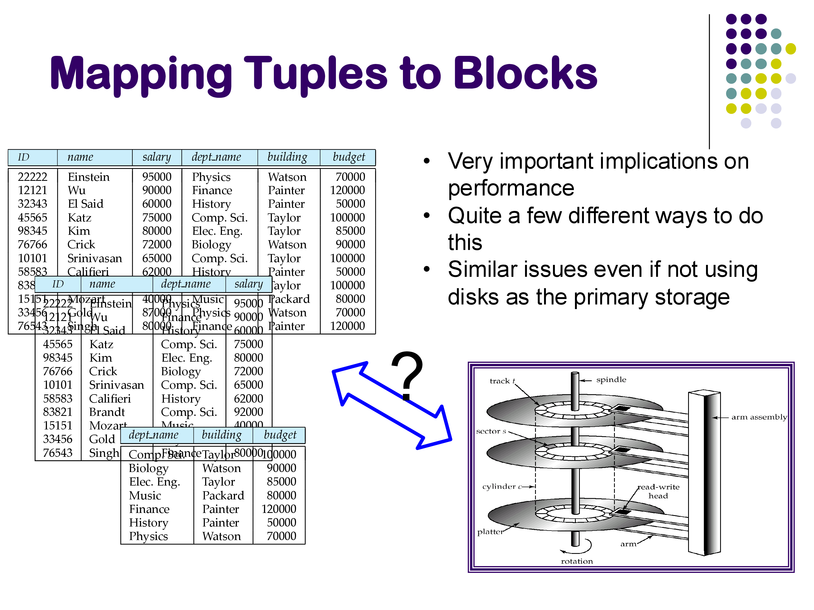
This is part of the reason why systems like PostgreSQL are fundamentally limited in exploiting modern hardware. PostgreSQL was built over 30 years ago and was not designed for the hardware we have today — it used to be a single-threaded system and could not even use multiple threads. In contrast, modern systems like DuckDB are built from scratch to exploit current hardware: they use vectorized execution, compilation techniques, and carefully chosen storage layouts to extract maximum performance. Even something as seemingly simple as how you arrange tuples on disk can make a dramatic difference.
There are two separate issues we need to address:
- Within a block: How do we lay out tuples (or sub-tuples) inside a single disk block or memory page? This is relatively straightforward and primarily impacts cache performance.
- Across blocks: Given that a relation spans many blocks, which block should a particular tuple go to? This involves more significant trade-offs — for example, keeping data sorted makes searching faster but makes insertions harder, while columnar storage enables better scans but makes tuple reconstruction expensive.
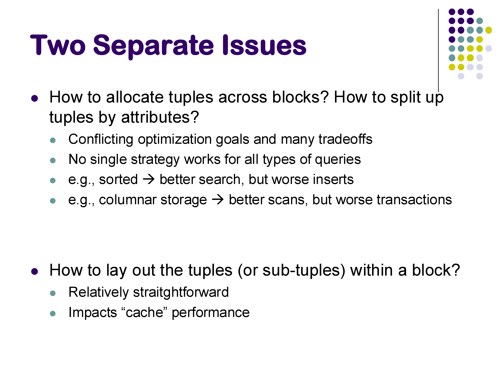
No single strategy works optimally for all types of queries. The best layout depends on the workload: a point lookup (SELECT * FROM R WHERE id = 100) benefits from sorted or hashed organization, while an analytical scan (SELECT A, B FROM R) benefits from columnar storage. Database system design is fundamentally about navigating these trade-offs.
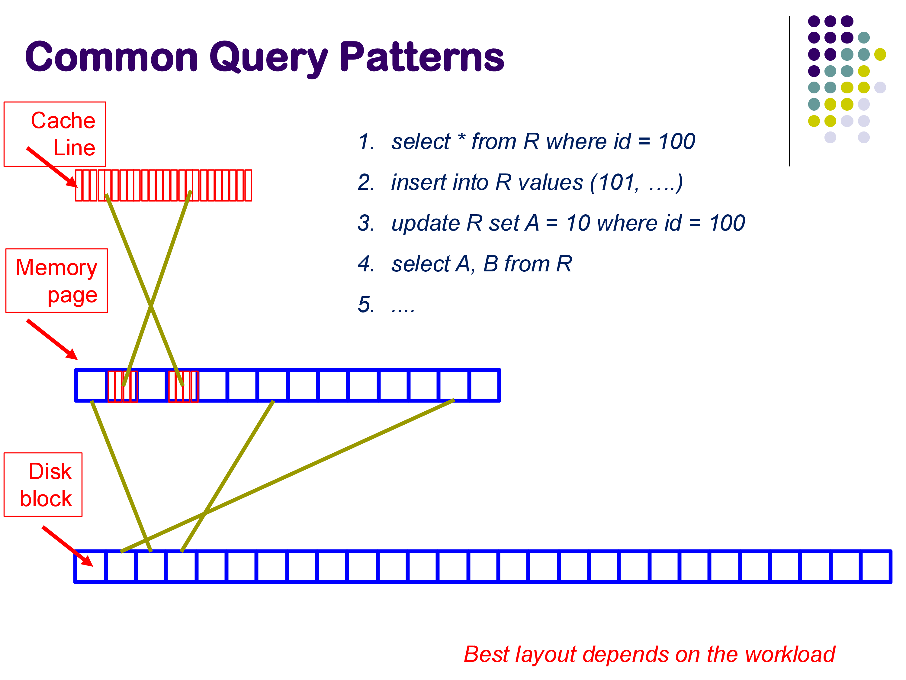
2. File System vs. Direct Disk Access
Before we discuss how data is laid out, we need to address a preliminary question: should the database system use the operating system’s file system, or should it bypass the OS and work directly with the disk?
Option 1: Use the OS File System
The standard approach today is for the database to use the operating system’s file system. The database allocates a large file on disk — perhaps starting at a gigabyte — and then manages the blocks within that file itself. The file is essentially treated as a contiguous sequence of blocks: the database zeros it out initially and then places data into specific blocks as needed. PostgreSQL works this way, and it makes the assumption that the file is contiguous on disk (though the OS may fragment it in practice).
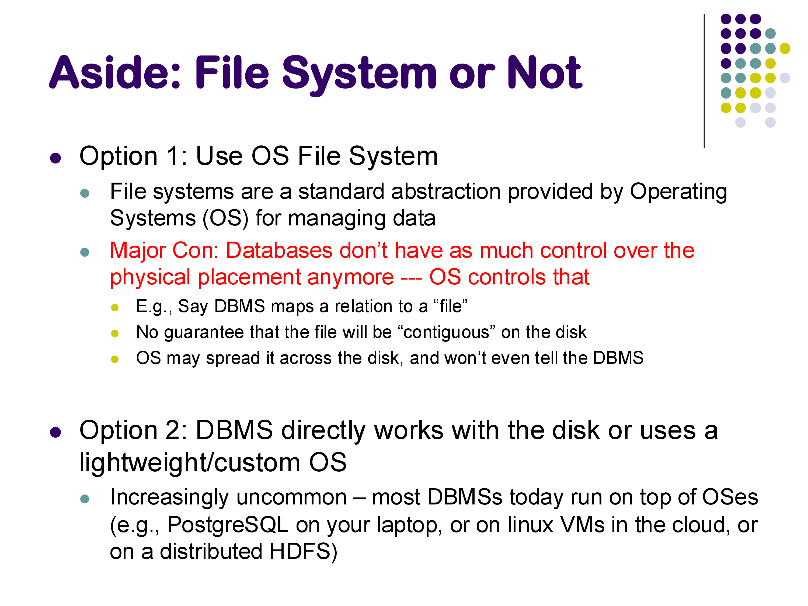
The major disadvantage of this approach is that the database system does not have control over physical placement on disk. The operating system decides where the file’s blocks actually reside, and it may spread them across the disk in ways that are suboptimal for the database’s access patterns.
Within the file system approach, there are further choices. One option is to allocate a single large file for the entire database and manage all relations within it — this is what PostgreSQL does. Another option is to use a separate file for each relation, which is the approach taken by SQLite and MySQL. Either way, the result is the same at a conceptual level: a set of relations mapped to a set of blocks on disk.
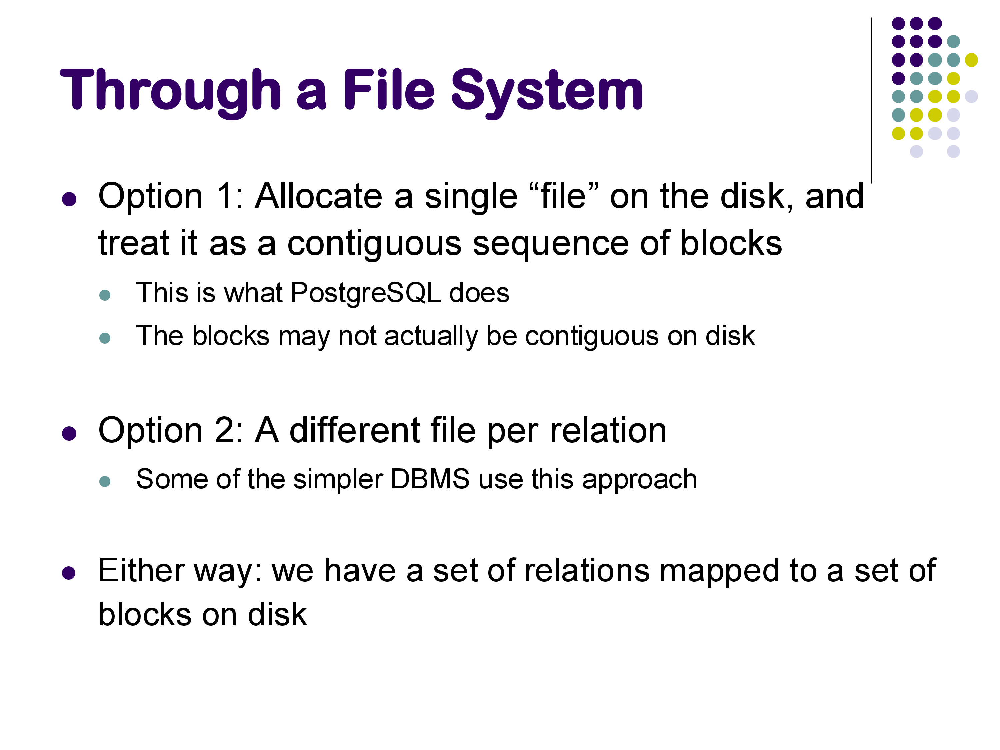
Option 2: DBMS Directly Manages the Disk
In the older days, high-performance database systems bypassed the operating system entirely and worked directly with the disk hardware. This gave them complete control over physical placement, allowing them to optimize for sequential access patterns and minimize seek times. Today this approach is increasingly uncommon — most database systems run on top of operating systems, on cloud VMs, or on distributed file systems like HDFS, making direct disk access impractical. However, truly high-performance systems may still use something like this to squeeze out the last bit of performance.
One positive development is that modern operating systems have become more efficient and now provide more knobs for applications to control I/O behavior, making the lack of direct disk access less of a problem than it used to be.
An Important Aside: Controlling Writes to Disk
One issue that we will revisit when we discuss transactions is that database systems need to control when data is written back to disk. The operating system’s buffer manager moves data between memory and disk automatically, but the database system requires guarantees about the order in which writes happen. Without those guarantees, the database cannot ensure the ACID properties — specifically, it cannot guarantee atomicity and durability of transactions. This is a significant concern that has driven some systems to bypass the OS buffer manager entirely.
A Typical File Layout
Assuming we use the file system approach, a database file might look something like this: a pre-allocated region of disk blocks, initially empty, with different portions allocated to different relations and indexes as data is inserted.
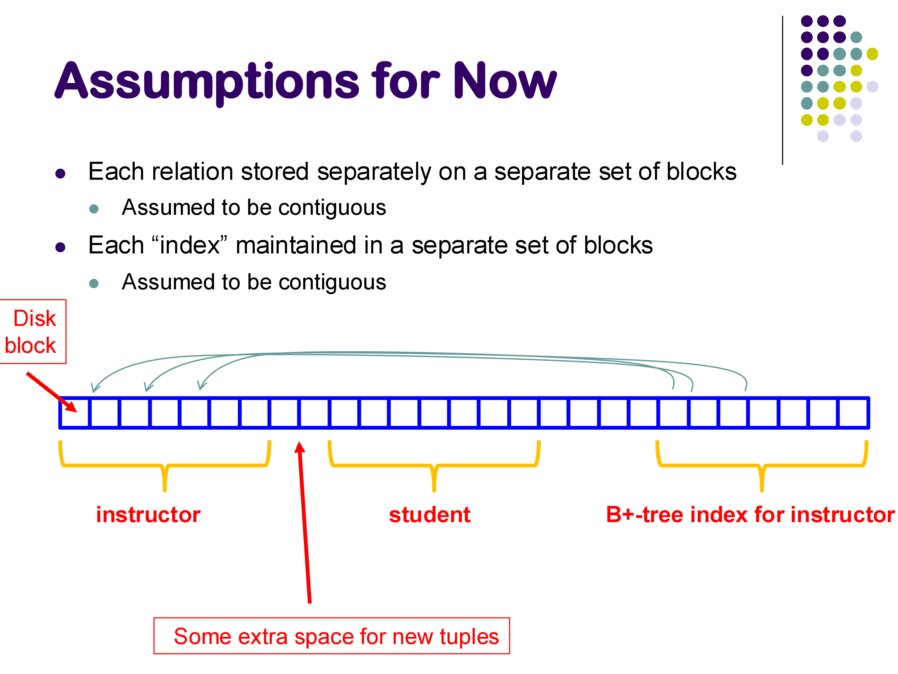
Some blocks hold instructor tuples, others hold student tuples, and still others hold B+-tree index nodes. As new tuples are inserted, they fill into the appropriate regions. Updates to the data may also trigger updates to associated indexes. There is typically some empty space reserved for growth.
3. Within a Block: Fixed-Length Records
The simplest case for within-block layout is when all records have the same fixed length. If each record is n bytes, then record i is stored at byte position n × (i − 1) within the block. This makes it trivial to locate any record by its position number.
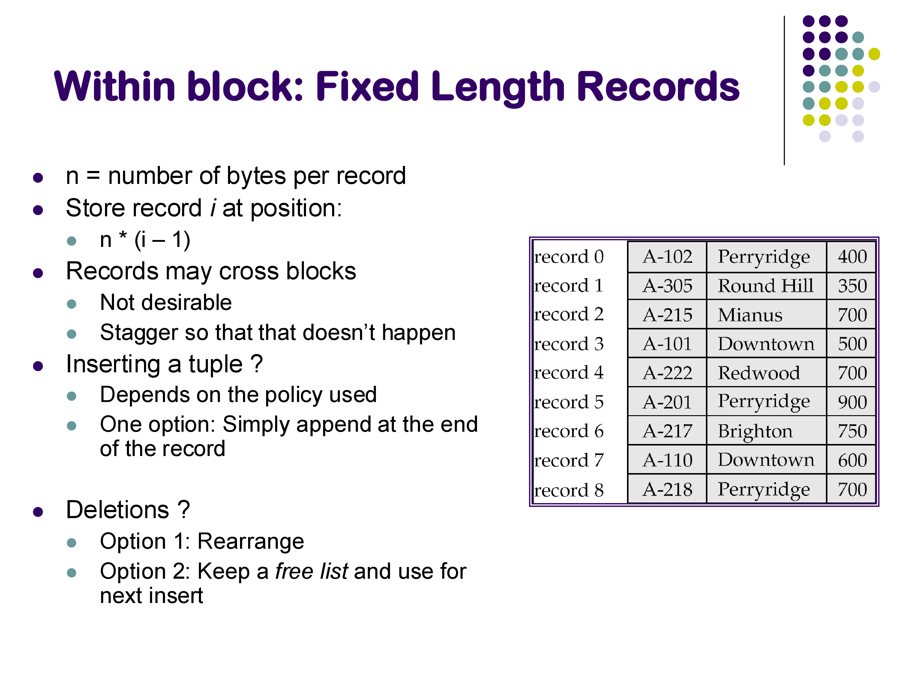
A few practical considerations arise:
Records should not cross block boundaries. If a record would span two blocks, it is better to waste a little space at the end of the first block and start the record at the beginning of the next one. This avoids the complexity and performance cost of reading two blocks to retrieve a single record.
Inserting a tuple can be as simple as appending it at the end of the available space in the block, or it can follow a specific policy depending on the file organization (e.g., maintaining sorted order).
Deleting a tuple is more interesting. There are two common approaches:
- Rearrange: shift the remaining records to fill the gap left by the deleted record. This keeps the block compact but requires moving data.
- Free list: leave the deleted slot in place and maintain a linked list of free slots. The block header stores a pointer to the first free slot, and each free slot contains a pointer to the next one. When a new record needs to be inserted, the system follows the free list to find an available slot.
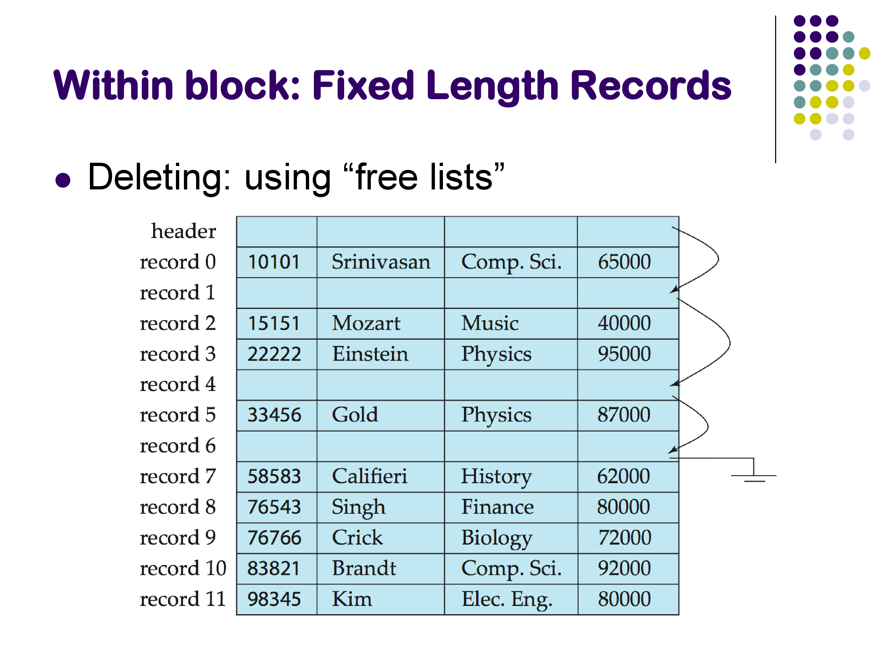
The free list approach is generally preferred because it avoids the cost of shifting records around. It is worth noting that the within-block layout does not significantly affect disk-to-memory transfer performance — the entire block is read into memory regardless of how the records are arranged within it. However, the layout does matter for CPU and cache performance once the block is in memory.
4. Within a Block: Variable-Length Records (Slotted Page)
In practice, most records are not fixed-length. Relations commonly include VARCHAR, TEXT, or other variable-length fields, which means records within the same relation can have different sizes. The standard approach for handling this is the slotted page (or slotted block) structure.
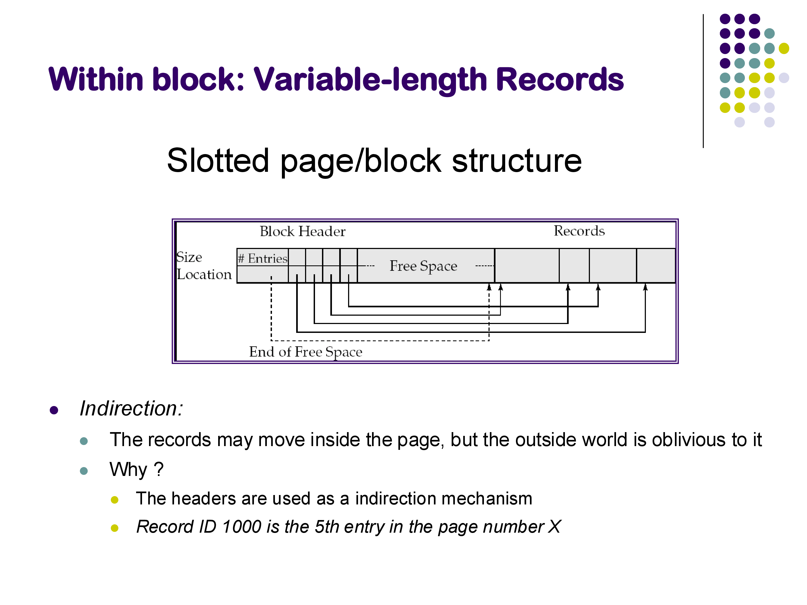
A slotted page has three regions:
- Block header: located at the beginning of the block, it contains the number of record entries and an array of (offset, size) pairs — one for each record currently stored in the block. It also tracks where the free space ends.
- Free space: an open region in the middle of the block.
- Records: stored starting from the end of the block, growing toward the header.
Records grow from the end toward the beginning, while the header’s slot array grows from the beginning toward the end. The free space sits between them and shrinks as records are added.
The key property of the slotted page structure is indirection. External references to a record use the form “page X, slot 5” — they point to an entry in the slot array, not to the record’s actual byte offset. This means that records can be moved around within the page (for example, to compact free space) without invalidating any external pointers. The slot array is updated to reflect the new positions, but the outside world is oblivious to the change. This indirection mechanism is used by virtually all modern database systems.
5. Within a Block: Cache-Optimized Layout (PAX)
Even though the within-block layout does not affect disk I/O performance (since the whole block is read at once), it has a significant impact on CPU cache performance. This matters because once a block is in memory, the CPU must process it, and cache misses can be surprisingly expensive.
The Problem with Row-Wise Layout (NSM)
The traditional approach is called the N-ary Storage Model (NSM): entire tuples are stored contiguously within a block. Record 1 is followed immediately by record 2, and so on, with all attributes of each record stored together.
Consider a query like SELECT name FROM R WHERE age < 40. When the database scans a block, it loads the block into the CPU cache. But because tuples are stored row-wise, each cache line contains a mixture of all attributes — name, age, salary, department, and so on. The query only needs name and age, so most of the data brought into the cache is useless. This results in a high rate of cache misses.
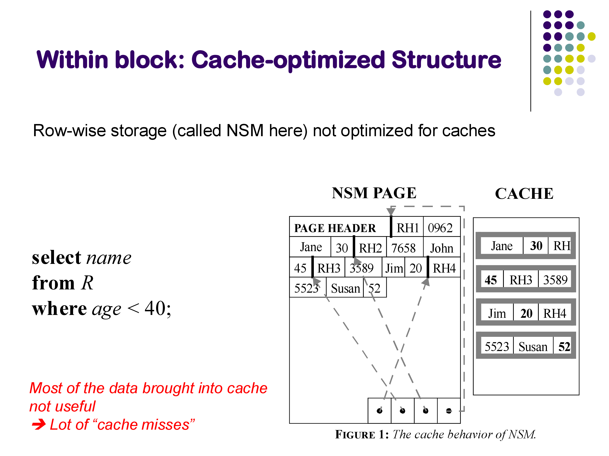
The PAX Solution
PAX (Partition Attributes Across) addresses this by reorganizing data within each block into a columnar layout. Instead of storing complete tuples one after another, PAX divides the block into “mini-pages,” one per attribute. All the name values for tuples in this block are stored together, all the age values are stored together, and so on.
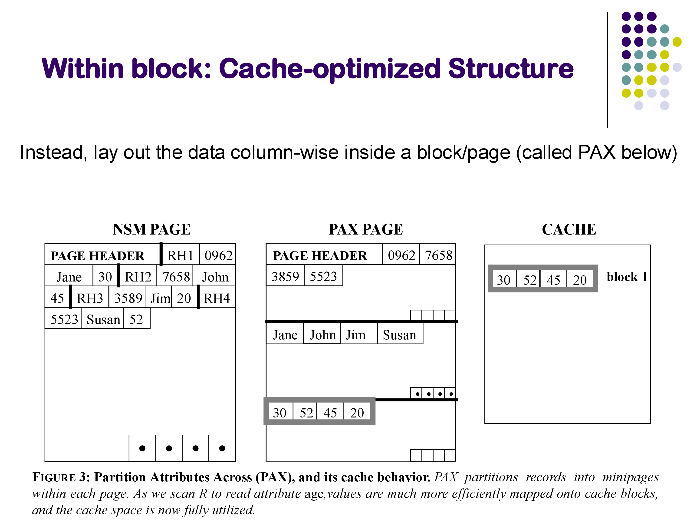
Now when the query scans the age values, they are contiguous in memory, so the cache lines are fully utilized — every byte loaded into the cache is relevant to the query. The improvement in cache performance can be substantial.
It is important to understand that PAX is a within-block optimization. The same tuples reside in the same block as they would under NSM; only the layout within the block changes. This is in contrast to full column-oriented storage (discussed in Section 7), which stores entire columns across many blocks. PAX gives you the cache benefits of columnar layout without changing the across-block organization.
6. Across Blocks: File Organization
We now turn to the second major question: given that a relation spans many blocks (potentially thousands or millions), which block should a particular tuple go to? There are three fundamental approaches.
6.1 Heap Organization
The simplest approach is heap organization: place each new tuple wherever there is available space. There are no guarantees about the ordering of tuples across blocks.
The advantage is simplicity — insertions are fast because the system just finds any block with free space. The disadvantage is that searching for a specific tuple requires scanning all blocks of the relation, since there is no way to know which block contains a given value. For large relations, this is prohibitively expensive.
6.2 Sequential (Sorted) Organization
A more structured approach is sequential organization: keep the tuples sorted by some search key, typically the primary key. Block 1 contains the tuples with the smallest key values, block 2 contains the next range, and so on.
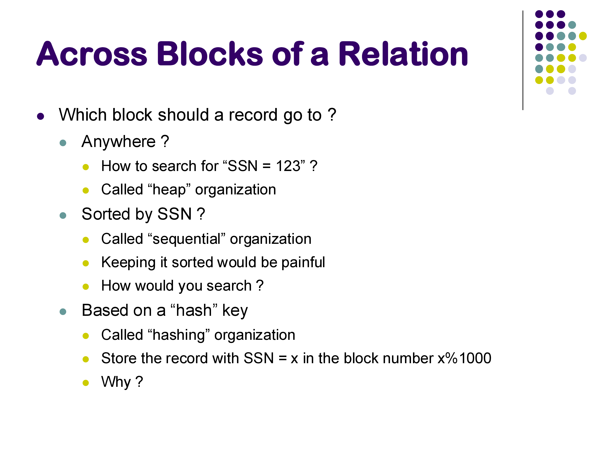
The benefit of sorted organization is that it enables binary search. If you are looking for a tuple with a specific key value, you can jump to the middle of the relation’s blocks, compare, and narrow the search by half with each step. For a relation spanning n blocks, binary search requires log₂(n) block accesses.
However, binary search on disk is still too slow for practical purposes. Consider a relation with one million blocks (roughly 4 GB of data). Binary search requires log₂(1,000,000) ≈ 20 block accesses. Since each random disk access takes approximately 10 milliseconds, that is 200 milliseconds for a single lookup — meaning the system can handle only about 5 queries per second. That is unacceptably slow, especially given that the disk is fully occupied just performing these reads.
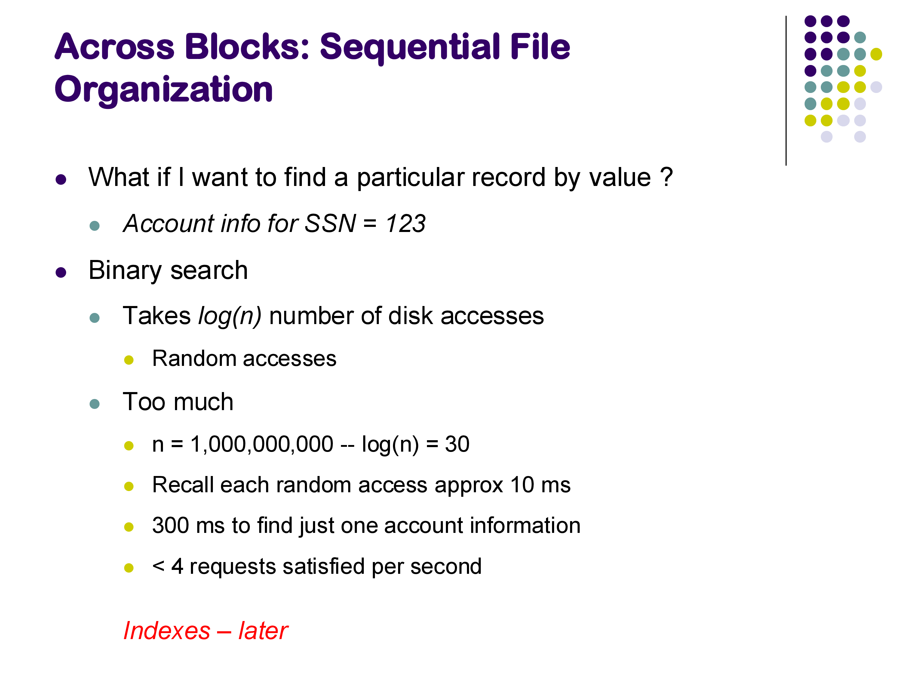
The solution is to use indexes — specifically, B+-trees — which reduce the number of block accesses from 20 to just 3 or 4 by narrowing the search range by a factor of 100 at each level instead of just 2. We cover B+-trees in detail in the next set of notes.
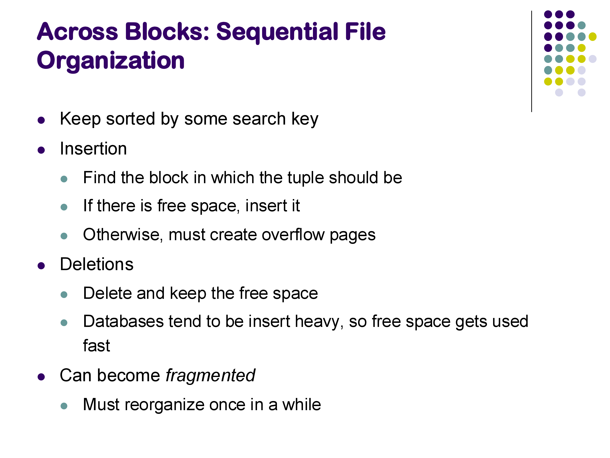
Sorted organization also creates challenges for insertions. When a new tuple arrives, it belongs in a specific position to maintain the sort order. But the target block may already be full. The typical solution is to create an overflow page linked to the full block. Over time, if too many overflow pages accumulate, the system must stop and reorganize the entire relation — re-sorting and redistributing tuples across blocks. This reorganization is expensive and requires the system to pause, so it is done infrequently.
Deletions are handled simply by leaving the freed space in place. Since insertions tend to be more common than deletions in most workloads, the free space gets reused quickly.
6.3 Hashing Organization
The third approach uses a hash function to determine which block a tuple belongs to. For example, if the relation occupies 100 blocks and the search key is ID, we might compute H(ID) mod 100 to determine the block number. Each block can hold multiple tuples (say, 50), so hash collisions are expected and handled naturally within the block.
The major advantage is that equality lookups are extremely fast: to find the tuple with ID = 397, simply compute the hash, go directly to the correct block, and scan within it. There is no need for binary search or index traversal.
The major disadvantage is that range queries are essentially impossible. If you want all instructors with IDs between 90 and 102, there is no way to exploit the hash structure — you would have to compute and look up every possible ID value individually, which is impractical. This limitation makes hashing unsuitable as a general-purpose on-disk organization for most database workloads, where range queries are common.
As with sorted organization, full blocks must be handled with overflow pages. We discuss hash-based approaches in more detail in the indexes notes.
7. Column-Oriented Storage
All of the organizations discussed so far store data row by row: each block contains complete tuples (or nearly complete tuples, in the case of PAX). An increasingly popular alternative is to store data column by column.
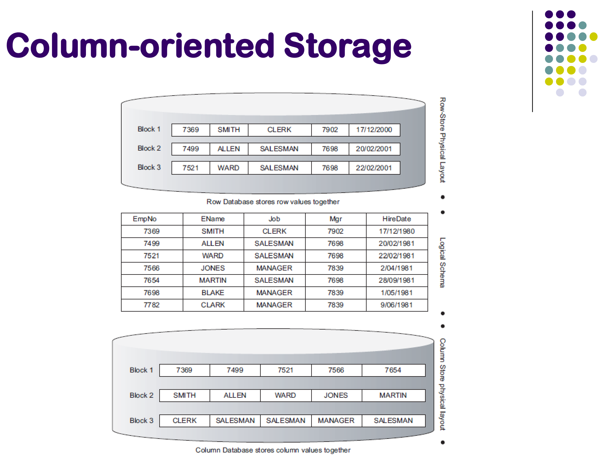
In column-oriented (or columnar) storage, each block contains values from only a single column. One block holds all the employee numbers, another block holds all the employee names, another holds all the job titles, and so on. A single column may span many blocks, but each block itself contains data from only one attribute.
This is similar in spirit to PAX, but applied at a much larger scale. PAX reorganizes data within a single block; column-oriented storage reorganizes data across the entire relation. The distinction is important: PAX keeps the same tuples in the same blocks and only changes the within-block layout, while columnar storage fundamentally changes which data lives in which block.
Tuple Reconstruction
The most important challenge with columnar storage is: how do you reconstruct a specific tuple? If the employee number is in one block, the name in another, and the salary in yet another, how do you put them back together?
The answer is that positions matter. The first entry in each column corresponds to the same tuple, the second entry corresponds to the second tuple, and so on. To reconstruct tuple number 3, the system reads the third entry from each column. The positions cannot be rearranged independently — they must remain synchronized across all columns.
This means that reading a single tuple is actually quite expensive. If the relation has 5 columns, reconstructing one tuple requires reading 5 different blocks (one from each column), whereas in row-oriented storage, it would require reading just 1 block. This is a significant cost.
7.1 Benefits
Despite the tuple reconstruction cost, columnar storage offers several compelling advantages:
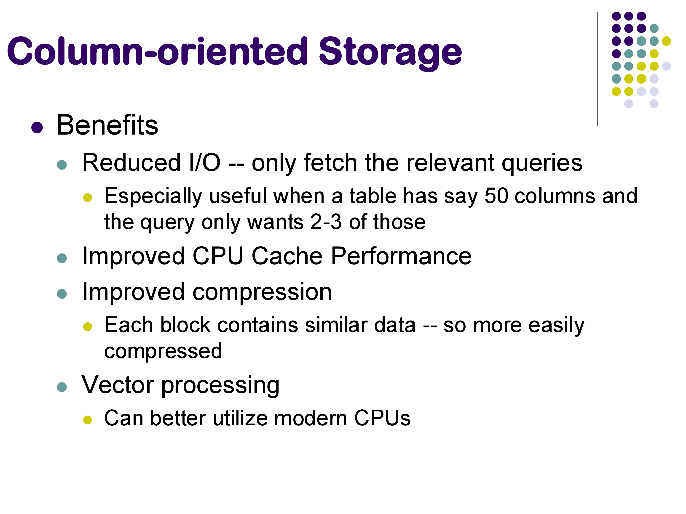
Reduced I/O: Most analytical queries access only a few columns. It is not uncommon to see tables with 20 or 30 columns where each query touches only 2 or 3 of them. With columnar storage, only the relevant columns need to be read from disk, potentially reducing I/O by an order of magnitude.
Better CPU cache performance: For the same reason that PAX improves cache utilization — data of the same type is stored contiguously, so cache lines are fully utilized when scanning a column.
Better compression: When each block contains data of a single type (all integers, or all short strings), compression algorithms can achieve much higher ratios than when a block contains a mixture of types. This further reduces I/O.
Better utilization of modern CPUs: Modern processors include SIMD (Single Instruction, Multiple Data) instructions that can operate on vectors of values simultaneously. Columnar data is naturally suited to vectorized processing, enabling significant speedups.
7.2 Drawbacks
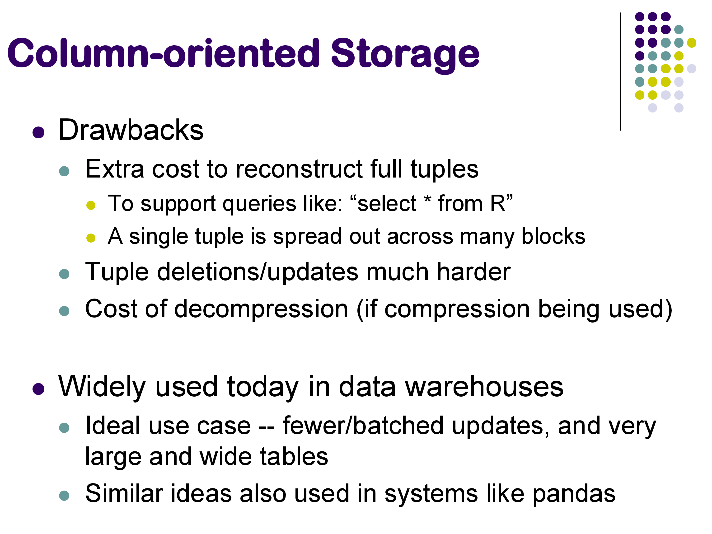
Tuple reconstruction is expensive: As discussed above, reading a single complete tuple requires accessing multiple blocks. A
SELECT *query on a 50-column table is extremely expensive with columnar storage.Updates and deletes are hard: Modifying a single tuple requires updating multiple blocks (one per column). This makes columnar storage poorly suited for workloads with frequent updates.
Decompression cost: If data is compressed (as it typically is), there is a CPU cost to decompress it before processing.
Despite these drawbacks, columnar storage has become the dominant approach for data warehouses and analytical workloads. Systems like Snowflake, Amazon Redshift, and ClickHouse all use columnar storage. The trade-off is clear: reading individual tuples is expensive, but analytical queries that scan large volumes of data across a few columns are dramatically faster. Since data warehouse workloads are characterized by large scans and infrequent updates, the trade-off is overwhelmingly favorable.
In contrast, transactional systems like PostgreSQL continue to use row-oriented storage because their workloads involve frequent updates and lookups of individual tuples. Hybrid approaches that attempt to combine the best of both worlds have been tried, but they have not been particularly successful — this remains an open research question.
7.3 Handling Nulls in Columnar Storage
A natural question that arises with columnar storage is: what happens when a value is null? Since positions must remain aligned across columns, you cannot simply skip a null value. There are two common approaches:
- Store the null explicitly: use a sentinel value or a null marker at the appropriate position. This is simple but wastes space if nulls are common.
- Use a bit array: maintain a separate bitmap for each column, with one bit per position indicating whether the value is null. This is more space-efficient when nulls are frequent, as the bitmap is much smaller than the actual data values it replaces.
Modern data warehouse systems use sophisticated variations of these techniques — along with many other optimizations — to extract the best possible performance. Hundreds of papers have been written on optimizing columnar storage.
8. Columnar File Representations: Parquet, ORC, and Friends
The ideas behind column-oriented storage extend beyond databases into the world of file formats for data storage. Many data-intensive applications store data in flat files rather than in a database, and the same row-vs-column trade-offs apply.
Problems with CSV and JSON
CSV files are the most common format for tabular data exchange, and they work well for small datasets. But at scale — millions or billions of records — CSV files have several significant problems:
- Text is inefficient: numbers, dates, and other structured data are stored as human-readable text, which takes far more space than a binary representation.
- Parsing is expensive: every time the data is read, each field must be parsed and converted from text to its internal representation (a process called deserialization). This CPU cost adds up quickly at scale.
- Row-based layout: CSV files store data row by row, which means reading a single column requires scanning the entire file.
JSON files share all of these problems, with the additional overhead of key names repeated for every record.
Columnar File Formats
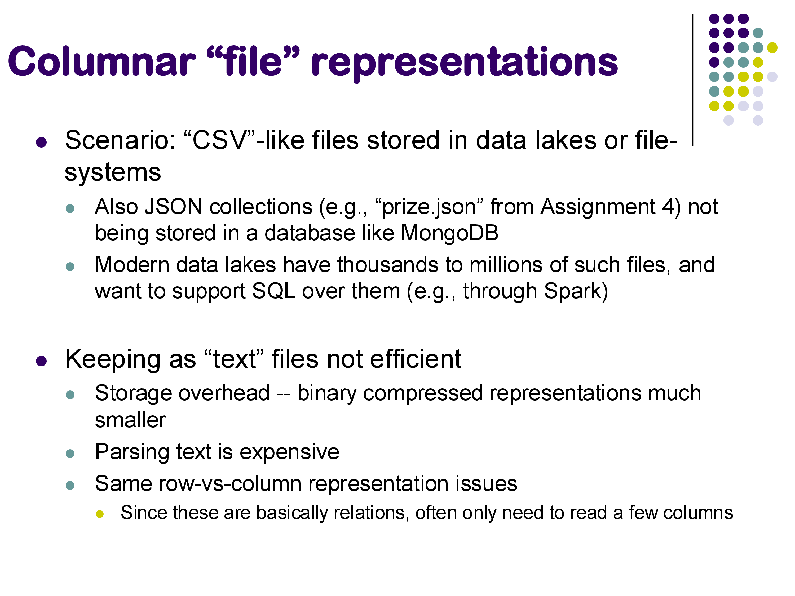
Several file formats have been developed to address these issues. The most widely used today is Apache Parquet, but ORC (Optimized Row Columnar), Avro, Arrow, and Protocol Buffers serve similar purposes. They share three key design principles:
- Columnar layout: data is stored column by column, enabling efficient reads of individual columns.
- Binary compressed representation: data is stored in a compact binary format with compression applied per column chunk, dramatically reducing storage and I/O.
- No deserialization overhead: the format is designed so that data can be read directly into memory structures without a separate parsing step.
Parquet files are extremely common in modern data infrastructure. If you work with any system that processes significant volumes of data, you are likely using Parquet files — even if you do not realize it, since libraries like Python’s Pandas can read and write Parquet transparently.
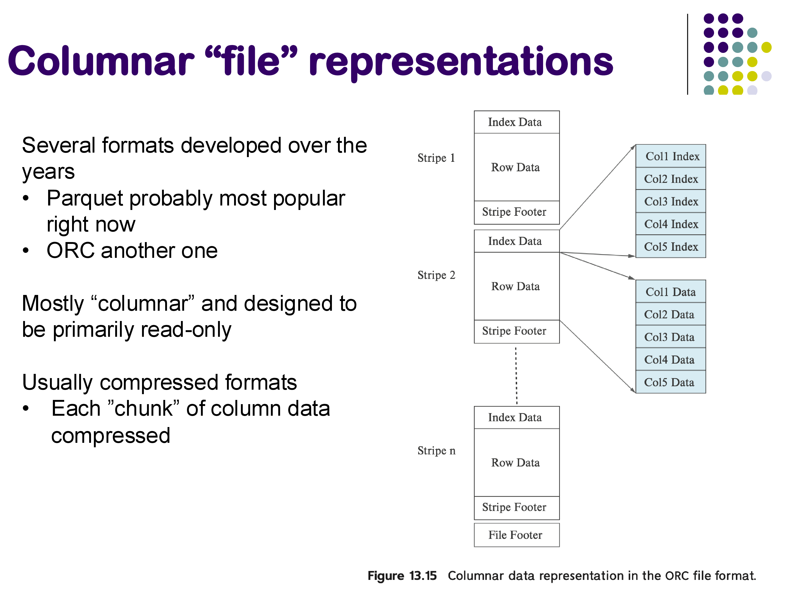
Modern data lakes — repositories of raw data files stored on distributed file systems or cloud storage — may contain thousands to millions of Parquet or ORC files. Systems like Apache Spark and Databricks provide the ability to run SQL queries directly over these files, combining the flexibility of file-based storage with the querying power of SQL. In fact, this is Databricks’ central value proposition: enabling SQL-style analytics over large collections of Parquet files without requiring a traditional database.
9. Summary
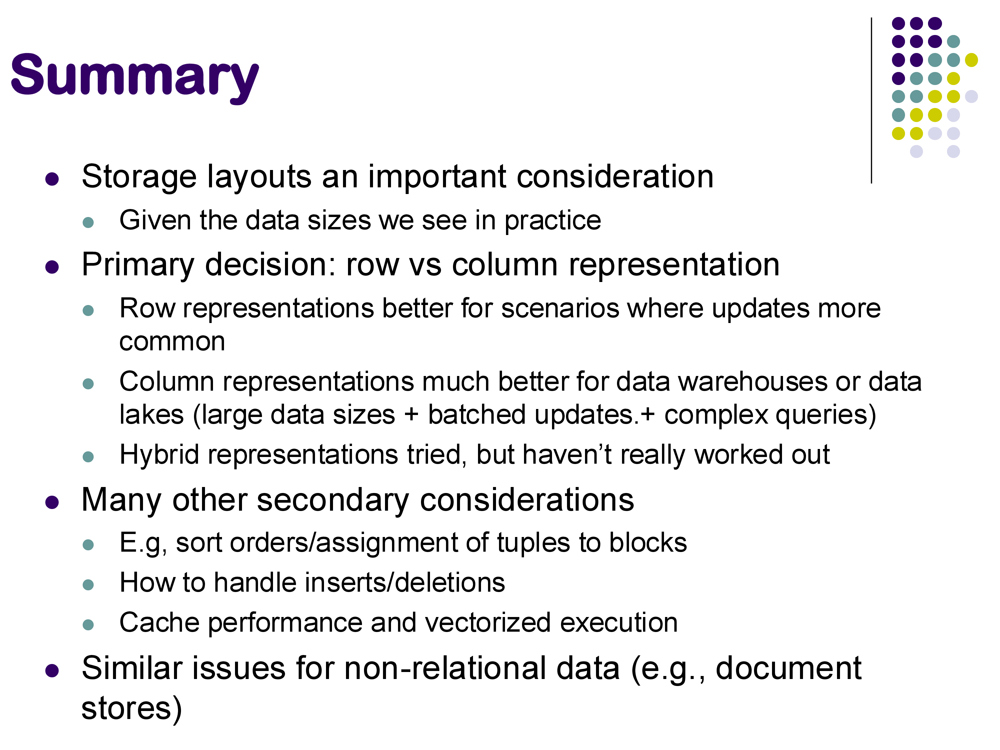
Storage layout decisions are an important consideration in database system design, particularly given the data sizes we encounter in practice. Small changes in how tuples are organized can have enormous effects on query performance.
The primary design decision is row versus column representation:
- Row-oriented storage is better for transactional systems where individual tuple lookups and updates are the dominant operations. PostgreSQL uses row storage because its typical use case is as a backend for web applications, where updates are frequent.
- Column-oriented storage is better for analytical and data warehouse workloads, where queries scan large amounts of data but touch only a few columns. Systems like Snowflake, Amazon Redshift, and Databricks/Spark are built around columnar storage.
- Hybrid representations have been attempted — trying to get the benefits of both — but they have not been particularly successful. This remains an open research question.
Beyond the row-vs-column choice, there are many secondary considerations: sort orders and hashing for across-block organization, cache-optimized layouts like PAX for within-block performance, and file formats like Parquet for efficient data interchange. These same issues arise for non-relational data as well — document stores face similar trade-offs, and even data processing libraries like Pandas have incorporated some of these ideas in recent years.